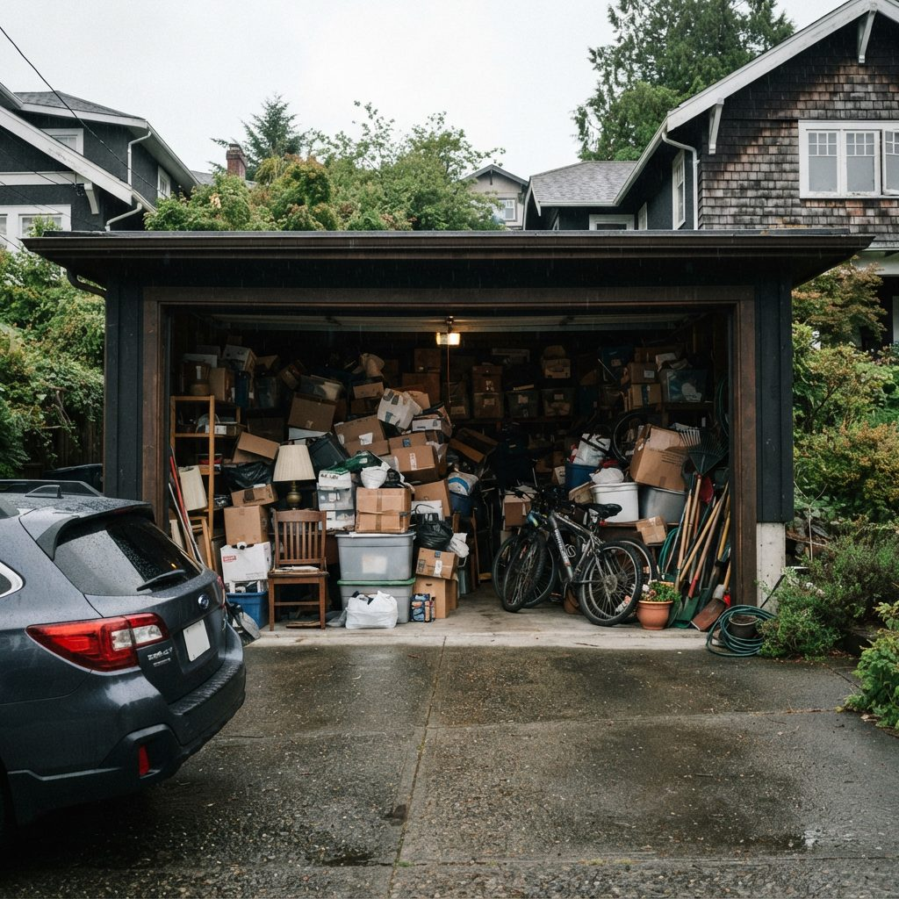
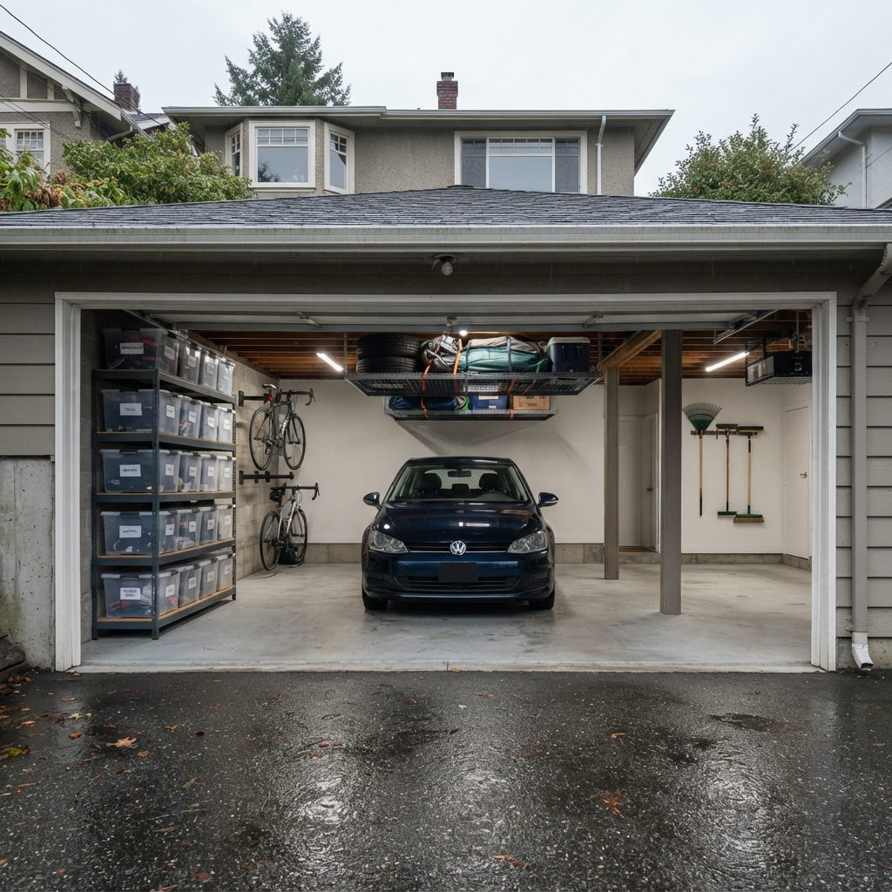
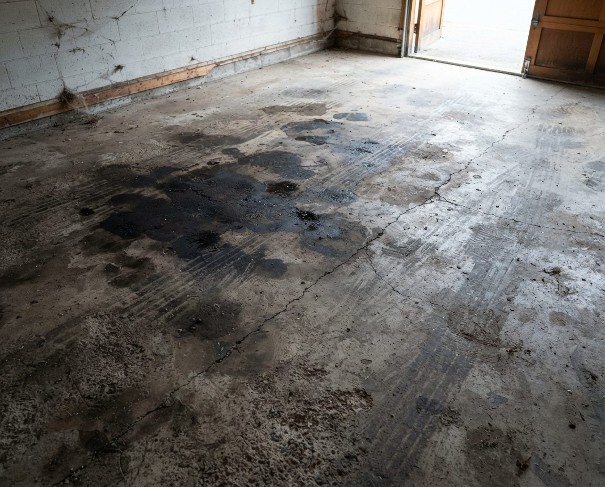
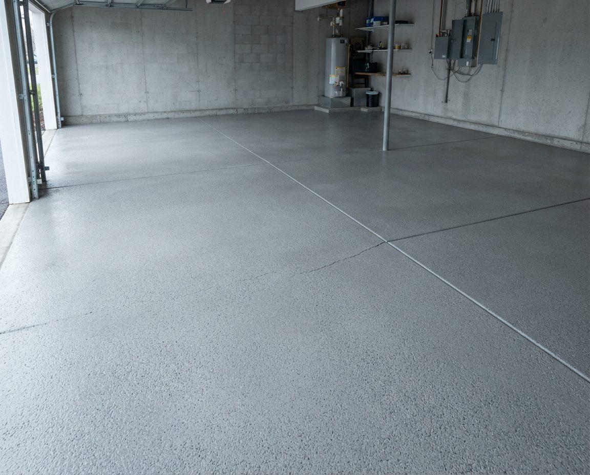

Why the Charger Decides the Layout
BC Hydro says 80% or more of EV charging in the province happens at home. For most Metro Vancouver owners with a garage, that means a Level 2 unit bolted to a garage wall and a cable that gets plugged in almost every night. Shelving can move. A hardwired charger on a dedicated 240-volt circuit stays where the electrician put it, because moving it means a new permit and new wiring.
So the charger is the one fixed point in the room, and everything else should be planned around it. The common mistake runs the other way: the garage gets organized first, the charger arrives a year later, and the electrician mounts it wherever there is a gap. That gap is often behind the bikes, beside the recycling or at the wrong end of the stall for the car's charge port. Then the cable crosses the floor, the bins get shuffled every evening, and the shelving that took a weekend to build comes down.
If a charger is already on the wall, we design around it. If it is a year or two away, we design for it now and leave its wall section empty, which costs nothing at the planning stage.
Choosing the Charging Wall Before Any Shelving Goes Up
Four things decide where a charger belongs, and we check all four at the assessment.
Where the car's charge port is
Charge ports sit in different places from one model to the next: front fender, rear quarter, driver's side, passenger's side. Note where yours is and which way you nose into the garage. A charger on the same side and end as the port needs the shortest cable run and keeps the cable out of the walkway. If the household has two EVs, or plans to replace the second car with one, the charger position has to work for both.
How far the cable reaches
Cables on home units are a fixed length, and longer is not always on offer. Tesla's current Wall Connector, for example, is sold with a 24-foot cable. Measure from the wall position to the port with the car parked where it sits every night, then add slack so the cable hangs in a loose curve rather than pulling tight across the door opening.
How far it is from the panel
A longer run from the electrical panel means more wire and more labour. Garages that share a wall with the panel or a subpanel are usually the cheapest to wire. A detached lane garage is a different job again, since the circuit has to get out to it.
What else needs that wall
The best charger wall is often the wall that already carries the bike hooks or the tallest shelving. We would rather move the bikes than accept a charger in a poor spot. In a narrow Vancouver single, the side wall nearest the car door is usually the one that has to stay clear for getting in and out, so the charger often goes on the front wall at bumper height instead.


Get the car inside firstAn example Metro Vancouver layout. A charger is only useful if the car parks next to it every night, so the first job is clearing the stall and pushing storage onto one wall and overhead.
Keeping the Panel and the Circuit Reachable
In a lot of Metro Vancouver houses the electrical panel is in the garage, and in a lot of garages that panel is hidden behind a shelving unit, a stack of paint cans or a chest freezer. Your electrician needs to open it to add the 240-volt breaker, and an inspector will want to see it. We leave a clear zone in front of the panel from floor to ceiling, keep shelving out of it permanently, and route nothing across it.
Panel size matters more than most people expect. A May 2026 BC installation guide from ThinkEV notes that homes built after about 2005 with 200-amp service usually have room for a charger, while 1970s and 1980s houses on 100-amp panels often need an upgrade costing $1,500 to $3,500. The same guide points to load-management chargers that throttle charging when the house draws heavily, as a way to avoid that upgrade. That is a question for your electrician. Our part is making sure the panel, the planned circuit route and any subpanel location are clear on the day they arrive.


Clear slab, open panelAn example of the finish we aim for before a charger install. The panel on the back wall has nothing in front of it, and the floor is clean and dry so a cable that touches it does not pick up grit and oil.
Rain, Wet Slabs and the Charging Cable
Calgary garages fight road salt. Metro Vancouver garages fight water. From October to April a car comes home wet most evenings and drips onto the slab for an hour, and in older garages the slab itself wicks moisture up from below. A charging cable that lives coiled on that floor sits in a puddle, collects grit, and gets driven over.
The fix is simple and we build it into every charger wall. The connector goes back in its holster after every use. The cable hangs on a wide hook or cable organizer next to the unit, high enough that the loops clear the floor. Nothing stored under the charger sits directly on the concrete, and nothing made of cardboard goes on that wall at all, because a box that gets splashed every night turns soft and mouldy within one wet season.

If the slab is already stained or shows white mineral bloom near the walls, have it cleaned before the charger goes in. It is far easier to clean and seal an empty floor than to work around a mounted unit later. Our garage floor cleaning in Vancouver and our guide to mould in Vancouver garages cover what we do about damp slabs and walls.
Newer Homes: Find the EV-Ready Outlet First
If your home is fairly new, the wiring may already be there. Electric Autonomy Canada reported in 2021 that the City of Vancouver and 13 other BC municipalities had changed their zoning or parking bylaws so that every residential parking space in new developments has an adjacent wired outlet capable of Level 2 charging. In a newer townhouse or house that usually shows up as a 240-volt receptacle or a capped junction box near the stall.
We find that outlet before we design anything. It is surprisingly common to see one buried behind a freestanding shelf or a stack of bins, and occasionally behind a slatwall panel someone screwed over it. That outlet is your charger location, and the rest of the plan works outward from it.
Townhouse Tandems and Strata Garages
Tandem garages, with one car parked behind the other, are everywhere in Metro Vancouver townhouse complexes, from Burnaby and Richmond to Surrey and Coquitlam. They raise two charger questions. If the outlet is at the back, the cable has to reach a car parked at the front. And if both cars are electric, a single charger near the middle with enough cable for either stall is often better than one at the far end.

In a tandem we keep all storage on one side wall and shallow, usually 12 to 16 inches deep, so the cable and the car doors have the other side. Bins go overhead at the end where the car does not sit under them while charging.
Strata owners are in a stronger position than they used to be. The Province changed the rules for strata EV charging effective December 6, 2023. An owner can now apply to install charging at their own stall with a description of the equipment, its location, a qualified contractor and a cost estimate. The council has to decide within three months and cannot unreasonably refuse, though it can set reasonable conditions and require the owner to pay. Spending from the contingency reserve on EV infrastructure now needs only a majority vote; a special levy still needs three-quarters. Strata corporations with five or more lots must also get an electrical planning report by December 31, 2026 or December 31, 2028, depending on the region. If your complex's report lands this winter, it is a good moment to ask where your stall's charger would go.
Inside the strata garage itself, most bylaws limit what you can fix to common walls. We read your bylaws before designing and use freestanding or ceiling systems where wall anchors are not allowed. Our Burnaby garage organization and Richmond garage organization pages go deeper on townhouse tandems in those cities.
Where the Displaced Gear Goes
The charger wall is usually prime real estate, close to the door into the house and easy to reach. That is exactly why bikes, ski bags, the recycling and the paddleboard ended up there. Giving it to the charger means rehoming all of that, and in a Metro Vancouver garage there is a lot of it.

We move gear to the opposite wall or overhead. Kayaks and paddleboards go on wall cradles above head height, bikes hang vertically so they sit flat to the wall, and seasonal bins go on ceiling racks where the ceiling framing allows it. Recycling and garbage carts, which get moved every week, go by the big door where they do not cross the charging cable. The earthquake kit gets a fixed, labelled shelf near the house door. Our Vancouver garage storage solutions page compares the racks, rails and shelving we use and what they cost.
Rebates, Permits and Running Costs
BC Hydro currently offers a rebate of up to 50% of the cost of buying and installing a Level 2 home charger, to a maximum of $350, for single-family homes, row homes and duplexes. The charger has to be new, on BC Hydro's approved list, and certified for use in Canada, and Tesla units are no longer eligible. You need an electrical permit for the installation, and you have 180 days after installation to apply. Apartment and multi-unit buildings have separate BC Hydro programs. BC Hydro also lists a $250 bonus for enrolling in its Peak Saver program, and an optional Time-of-Day rate that saves 5 cents per kWh when you charge off-peak. Check BC Hydro's site for current terms before you buy, since rebate rules change.
On permits, the ThinkEV guide is direct: a new 240-volt dedicated circuit needs a permit and an inspection, which it puts at about $150 and one to two weeks. Book us for the week before the electrician, not the week after, so the wall, the panel and the floor are ready when they arrive.
What We Do, and What Your Electrician Does
We are a garage organization company, not an electrical contractor. We do not install chargers, run circuits or touch the panel. What we do is the work around the charger that nobody else plans:
- Assess the garage with the car in it and mark the charging wall, cable path and parking envelope.
- Clear the charger wall and the panel zone, and sort or remove what is not coming back.
- Rebuild storage on the remaining walls and overhead, with the charger wall left open.
- Fit a cable hook or organizer beside the charger location once the unit is in.
- Give you a written zone map so the charger wall stays clear after we leave.
If the garage needs a full reset first, we combine this with garage decluttering and a deep clean. For the wider Vancouver approach to zones, wall types and strata rules, see our main garage organization Vancouver page. Clients in Alberta can see our garage storage solutions in Calgary, where the charger wall also has to deal with road salt and cold snaps.